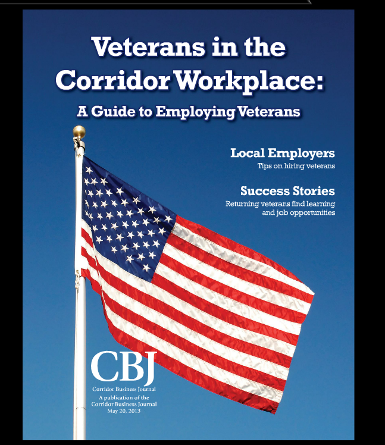

Corridor Business Journal
I worked for the Corridor Business Journal, a locally-owned, weekly business newspaper, from 2007-2014. The company produces a number of products, in addition to the weekly paper, including a twice-daily email newsletter and numerous magazines throughout the year.

A magazine I produced for the Corridor Business Journal about hiring veterans, including available tax incentives. Published summer 2013.